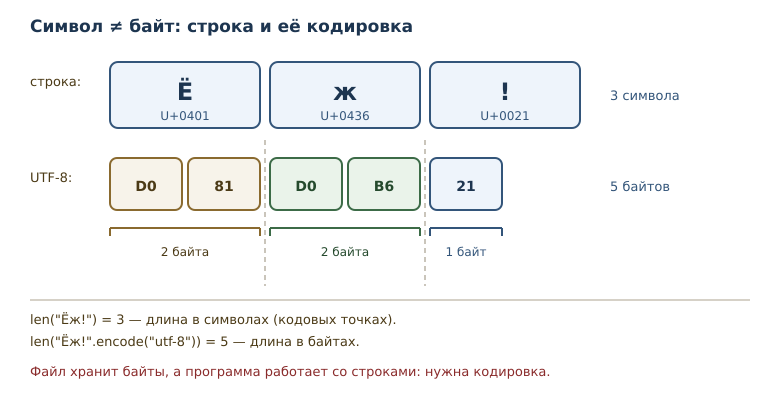
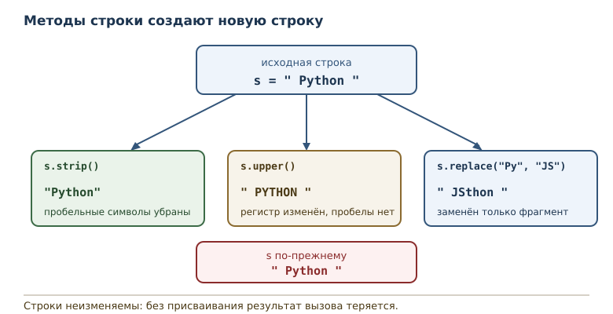

Строки: методы, форматирование и Unicode
Текст как последовательность символов, кодировки, методы строк и f-строки.
В этой главе
Строки появились ещё во второй главе — как текст в кавычках. С тех пор они использовались для вывода, но не как данные, которые нужно обрабатывать. Между тем почти любая программа имеет дело с текстом: имена пользователей, адреса, сообщения, файлы, ответы сети. В этой главе строка становится полноценной последовательностью: вы научитесь разбирать её на части, соединять обратно, сравнивать и форматировать, а также поймёте, чем символ отличается от байта.
15.1 Зачем эта глава
Текст — самый распространённый формат обмена данными между программами и людьми. Пользователь вводит имя, программа сохраняет его в базе, отправляет в письме, показывает на странице. На каждом шаге строку нужно привести к нужному виду: убрать лишние пробелы, привести к нижнему регистру, разделить на слова, собрать обратно с разделителями.
Кроме того, текст связан с представлением данных в памяти и в файлах. Строка в Python — последовательность символов Unicode, а файл хранит байты. Понимание разницы между ними избавляет от половины загадочных ошибок при чтении данных из внешнего мира.
После этой главы вы сможете:
- обращаться со строкой как с последовательностью символов;
- объяснять, что такое Unicode, кодовая точка и кодировка;
- применять основные методы строк и понимать, что они возвращают новый объект;
- разбирать текст через
splitи собирать черезjoin; - сравнивать строки и понимать, почему порядок не равен алфавитному;
- форматировать значения в f-строках.
15.2 Строковый тип
Строковый тип — неизменяемая последовательность символов Unicode; индексация и срезы работают как у других последовательностей. Строка поддерживает всё, что вы уже знаете о последовательностях: длину, индексы, отрицательные индексы, срезы, проверку вхождения и перебор.
word = "Python"
print(len(word))
print(word[0], word[-1])
print(word[1:4])
print("th" in word)
print(word.upper())
6
P n
yth
True
PYTHON
Длина строки — количество символов, а не байтов. Индекс указывает на
символ, срез вырезает подстроку. Проверка вхождения для строки ищет
подстроку, а не отдельный символ: "th" in "Python" истинно, потому что
такая последовательность символов встречается.
Неизменяемость строки означает, что её нельзя поменять на месте: нельзя
присвоить символ по индексу. Методы, которые преобразуют текст (upper,
lower, strip, replace), возвращают новую строку; методы поиска и
проверки возвращают число, bool или список.
15.3 Unicode
Unicode — стандарт кодирования символов всех письменностей. Строки Python — последовательности кодовых точек Unicode: каждая позиция в строке соответствует одному символу стандарта, независимо от того, буква это, цифра, иероглиф или эмодзи.
text = "Ёж!"
print(text)
print(len(text))
print(ord("Ё"), ord("ж"), ord("!"))
print(chr(0x0401), chr(0x0436))
Ёж!
3
1025 1078 33
Ё ж
Функция ord возвращает кодовую точку символа — целое число, под
которым символ зарегистрирован в Unicode. Функция chr выполняет
обратное преобразование. Кодовая точка Ё — 1025, ж — 1078. Символы
русского алфавита занимают диапазон вокруг 1024–1103, поэтому длина строки
«Ёж!» равна трём символам, хотя в UTF-8 она занимает пять байтов.
Одна тонкость: некоторые видимые символы состоят из нескольких кодовых
точек, например буква с комбинирующим ударением. В таких случаях len
считает кодовые точки, а не «глазом различимые знаки». Для повседневной
работы этого достаточно; более сложную обработку текста выполняют
специальные библиотеки.
15.4 Кодировка
Кодировка — правило перевода строки в байты и обратно. Байты — это то, что реально хранится в файле или передаётся по сети. Самая распространённая кодировка современного мира — UTF-8: она представляет каждую кодовую точку одним–четырьмя байтами.
encoded = "Ёж".encode("utf-8")
print(encoded)
print(len("Ёж"), len(encoded))
print(encoded.decode("utf-8"))
print("Python".encode("utf-8"))
b'\xd0\x81\xd0\xb6'
2 4
Ёж
b'Python'
Строка из двух символов занимает четыре байта: кириллическая буква в
UTF-8 кодируется двумя байтами, а латинская — одним. Печать байтов
показывает их шестнадцатеричные значения. Обратное преобразование
decode возвращает строку.
Если декодировать байты не той кодировкой, Python сообщит об ошибке.
print(b"\xff".decode("utf-8"))
UnicodeDecodeError: 'utf-8' codec can't decode byte 0xff in position 0: invalid start byte
Сообщение говорит, какой байт и в какой позиции не похож на корректное начало символа UTF-8. Такая ошибка типична при чтении файла, записанного в другой кодировке. Правило простое: кодировка чтения должна совпадать с кодировкой записи.

15.5 Escape-последовательности
Escape-последовательность — запись специального символа обратной
косой чертой: \n — перевод строки, \t — табуляция, \\ —
обратная косая черта, \" — кавычка. С их помощью в строковый литерал
попадают символы, которые нельзя набрать напрямую или которые иначе
закончили бы строку.
print("первая строка\nвторая строка")
print("a\tb\tc")
print("кавычки: \"текст\"")
print("обратная косая: \\")
print(r"C:\temp\new")
первая строка
вторая строка
a b c
кавычки: "текст"
обратная косая: \
C:\temp\new
Последняя строка использует «сырую» строку — литерал с префиксом
r, в котором обратная косая черта не образует escape-последовательностей.
Так удобно записывать пути Windows и регулярные выражения. Обратите
внимание: r"\n" — это два символа, обратная косая черта и n, а не
перевод строки.
print(len(r"\n"))
print(len("\n"))
2
1
15.6 Методы строки
Метод строки — операция над строкой, вызываемая через точку. Метод может
вернуть новую строку (upper, lower, strip, replace), результат поиска
или проверки (find, count, startswith), а также список (split). Строка
неизменяема, поэтому методы не меняют исходный объект, а возвращают результат.
| Метод | Что делает | Пример |
|---|---|---|
upper() |
переводит в верхний регистр | "abc".upper() → "ABC" |
lower() |
переводит в нижний регистр | "ABC".lower() → "abc" |
strip() |
убирает пробельные символы по краям | " a ".strip() → "a" |
replace(a, b) |
заменяет все вхождения | "aXa".replace("X", "-") → "a-a" |
startswith(p) |
проверяет начало | "file.txt".startswith("file") → True |
endswith(s) |
проверяет конец | "file.txt".endswith(".txt") → True |
find(p) |
индекс первого вхождения или -1 |
"banana".find("na") → 2 |
count(p) |
число вхождений | "banana".count("na") → 2 |
strip() удаляет все пробельные символы — пробелы, табуляцию, переводы
строк, — а не только пробелы.
word = " Python "
print(word.strip())
print(word.upper())
print(word.lower())
print(word.replace("Py", "JS"))
print(word)
Python
PYTHON
python
JSthon
Python
Обратите внимание на последнюю строку: исходная строка не изменилась.
Методы вернули новые строки, а word осталось прежним. Именно поэтому
запись word.upper() без присваивания ничего не делает — результат
просто теряется.
Для поиска подстроки есть ещё методы, которые возвращают позицию.
name = "report.csv"
print(name.startswith("report"))
print(name.endswith(".csv"))
print("banana".find("na"))
print("banana".find("zz"))
print("banana".count("na"))
True
True
2
-1
2
find возвращает -1, если подстрока не найдена: это значение удобно
проверять, но легко забыть, что оно означает «нет», а не «позиция
минус один». count считает вхождения без перекрытий: в banana
подстрока na встречается дважды.

15.7 split и join
split и join — пара операций, которая разбирает строку на части и
собирает обратно. split возвращает список строк, join собирает одну
строку из последовательности строк.
sentence = "раз два три"
parts = sentence.split()
print(parts)
print("-".join(parts))
print("a,b,c".split(","))
print("a,,b".split(","))
['раз', 'два', 'три']
раз-два-три
['a', 'b', 'c']
['a', '', 'b']
split() без аргумента делит по любым пробельным символам и отбрасывает
пустые части. split(",") делит строго по запятой, поэтому пустое поле
между двумя запятыми превращается в пустую строку — это важно при разборе
CSV-подобных данных.
У join порядок обратный: метод вызывается у разделителя, а аргументом
служит последовательность строк. Все элементы должны быть строками.
print(",".join([1, 2]))
TypeError: sequence item 0: expected str instance, int found
Сообщение указывает на первый неподходящий элемент: ожидалась строка,
получено число. Перед join числа преобразуют функцией str или
f-строкой.
15.8 Сравнение строк
Сравнение строк происходит по кодовым точкам символов, а не по алфавиту языка. Строки сравниваются посимвольно, пока не найдётся различие; если одна строка служит началом другой, меньшей считается короткая.
print("Ё" < "А")
print("Ё" < "Я")
print("ё" == "Ё")
print("Python" < "python")
print("apple" < "banana")
print(sorted(["ёж", "арбуз", "яблоко"]))
True
True
False
True
True
['арбуз', 'яблоко', 'ёж']
Результаты удивляют, пока не посмотреть на кодовые точки. Буква Ё
имеет код 1025, а А — 1040, поэтому Ё меньше А, хотя в русском
алфавите стоит позже. Заглавные латинские буквы имеют меньшие коды, чем
строчные, поэтому "Python" < "python" истинно. И ё оказалась после
я при сортировке.
Практический вывод: для сравнения текста без учёта регистра приводите
обе строки к одному регистру. Для «человеческой» сортировки, где ё стоит
после е, а Ё не уезжает в начало, нужны отдельные правила сопоставления:
их задаёт локаль (например, locale.strxfrm) или сторонняя библиотека.
Почему строки неизменяемы
Неизменяемость строк — не ограничение, а полезное свойство. Строка широко используется как значение: её передают в функции, складывают в коллекции, используют как часть ключей и словарей. Если бы строку можно было менять на месте, любая функция могла бы испортить текст, который ей передали, и ошибка проявилась бы далеко от места вызова.
Кроме того, неизменяемость позволяет безопасно разделять одну строку
между разными частями программы: никто не изменит её незаметно для
остальных. Именно поэтому все методы возвращают новую строку, а не правят
исходную. Привычка «присвоить результат обратно в имя» —
text = text.strip() — становится естественной уже после нескольких
примеров: вы явно решаете, что дальше работаете с очищенным текстом, а
прежнее значение остаётся доступным, если оно понадобится.
Отсюда же следует практическое правило для интерфейсов: функция, которая принимает строку, не может испортить её у вызывающего кода. Всё, что она делает, — возвращает новую строку. Это упрощает рассуждение о программе: достаточно смотреть на возвращаемые значения, а не следить за побочными изменениями аргументов.
15.9 Форматирование
f-строки позволяют вставлять значения в текст и управлять их видом. После двоеточия указывается формат: количество знаков после запятой, ширина поля, выравнивание, заполнитель.
price = 1234.5
count = 7
print(f"цена: {price:.2f}")
print(f"цена: {price:>12,.2f}")
print(f"код: {count:03d}")
print(f"скидка: {0.15:.0%}")
цена: 1234.50
цена: 1,234.50
код: 007
скидка: 15%
.2f задаёт два знака после запятой, , включает разделители тысяч,
>12 выравнивает по правому краю в поле шириной 12, 03d дополняет
число нулями до трёх знаков, .0% показывает долю в процентах без
дробной части. Форматирование не меняет значение — оно меняет только
его представление в строке.
15.10 Типичные ошибки
Складывать строку с числом. "возраст: " + 42 — TypeError.
Используйте f-строку f"возраст: {42}" или str(42).
Ждать, что метод изменит строку. word.upper() возвращает новую
строку; без присваивания результат теряется. Строка неизменяема.
Путать длину строки и длину байтов. len("Ёж") равно 2, а
len("Ёж".encode("utf-8")) — 4. Это разные величины.
Считать порядок кодовых точек алфавитным. "Ё" < "А" истинно, хотя
в алфавите наоборот. Для сравнения без учёта регистра приводите регистр.
Делить по запятой и удивляться пустым строкам. "a,,b".split(",")
даёт пустой элемент. Это корректное поведение, а не дефект.
Передавать в join не строки. Нужны строки; числа преобразуются
явно.
Декодировать не той кодировкой. Файл, записанный в CP1251, нельзя
читать как UTF-8: получите UnicodeDecodeError или неверные символы.
15.11 Упражнения
1. Строка как последовательность
Для строки "Python" определите длину, первый и последний символы,
срез "Python"[2:5] (символы с индексами 2, 3 и 4) и результат
проверки вхождения "th".
Проверьте ответы программой.
2. Символы и байты
Для строки "Ёж" выведите длину, кодовые точки обоих символов и
результат кодирования в UTF-8. Объясните, почему длина строки и длина
байтов различаются.
3. Escape-последовательности
Посчитайте, сколько строк выведет print("a\nb") и какова длина строки
"a\nb". Объясните разницу и проверьте с помощью repr.
4. Чистка текста
Дана строка " Hello, World! ". Уберите пробелы по краям, приведите
к нижнему регистру и замените "World" на "Python". Выведите
результат в читаемом виде через repr.
5. Разбор предложения
Разделите строку "яблоко банан груша" на слова, выведите список слов
и отсортированный список. Объясните, почему порядок после сортировки
такой.
6. Нормализация имени
Напишите функцию normalize(name), которая убирает пробелы по краям и
приводит имя к нижнему регистру. Проверьте на " Alice " и "BOB".
7. Сравнение и регистр
Проверьте, истинно ли "Python" < "python" и почему. Посчитайте
количество вхождений "a" в "banana" и позицию первого вхождения.
8. Слова и длины
Разделите строку "раз два три" на слова и для каждого слова выведите
само слово и его длину.
9. Форматирование
Выведите число 3.14159 с двумя знаками после запятой, число 42 в
поле шириной 5 с ведущими нулями и строку "ok" по центру поля шириной
10. Объясните каждый элемент формата.
10. Мини-задача: инициалы
Напишите функцию initials(full_name), которая возвращает инициалы:
первые буквы слов, переведённые в верхний регистр. Проверьте на
"иван петров" и "анна сергеевна сидорова". Объясните, какие методы
строки понадобились.
15.12 Проверка понимания
- Почему строка называется неизменяемой и что это значит для методов?
- Чем кодовая точка отличается от байта? Что считает
len? - Зачем нужна кодировка и что произойдёт при неверной?
- Чем «сырая» строка отличается от обычной?
- Что возвращает
splitи что принимаетjoin? - Почему
"Ё" < "А"истинно, хотя в алфавите наоборот? - Что делает формат
:>12,.2fи из каких частей он состоит?
15.13 Что дальше
Строки, списки и кортежи хранят элементы в порядке и допускают повторы. Но иногда важнее другое: знать, встречалось ли значение раньше, и не хранить дубликаты. Для этого служат множества — коллекции уникальных элементов, устроенные на хешировании. Об этом — в главе «Множества и хеширование».